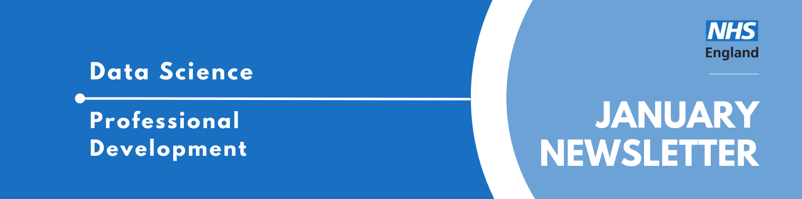

Data Science Community for Health and Care Newsletter January 2026

Welcome to the latest newsletter from the Data Science Community for Health and Care, brought to you by the NHS England Data Science Professional Development Functional Team.
The newsletter team are always happy to receive constructive feedback, and we invite you to send us any contributions you may have.
If you cannot access something of interest to you, please reach out.
Thanks for reading! – newsletter team
__
Looking for an interesting read?
New AI models trained on physics, not words, are driving scientific discovery
A multidisciplinary team of researchers from the Polymathic AI collaboration, including researchers from the University of Cambridge, have created new models trained using Physics.
The two models are trained using real scientific datasets, and being used to tackle problems in astronomy and fluid-like systems.
The aim is these “foundational models” can be applied to various fields or problems that share the same underlying physical principles.
An analytical framework for enhancing cancer care efficiency in North London hospitals
The journal paper shows the use of mathematical and statistical techniques on operational data to examine the impact of different factors on the time to treatment for cancer patients in North London hospitals. Understanding the factors which prolong the time between referral and treatment starting for cancer patients on pathways which cross healthcare providers is imperative to improved patient care. Three tumour pathways were analysed which involve transfer of patients between hospitals: sarcoma, urological, and head and neck cancers.
Several factors impact on the time to first treatment including demographic characteristics, day of the week first seen and method of communicating the cancer diagnosis. In particular, it was found that head and neck patients from lower socioeconomic areas were more likely to have longer times from referral to treatment. Patients with sarcoma who were first seen on a Sunday are more likely to breach the 28-day faster diagnosis standard.
This analysis is an important first step in highlighting where focus is needed to improve cancer care pathways. Understanding and mitigating the factors influencing the length of time between referral and treatment could enhance the efficiency of cancer care pathways and, consequently, patient outcomes.
January Analyst X Data Science Huddle
Recently, we had our January Analyst X Data Science Huddle!
Senior Data Scientists from the NHS England Data Science and Applied AI Team presented their work on generating synthetic patient pathways and clinical notes using LLMs - a really interesting piece of work!
Missed the session? Check out the recording and PowerPoint slides here, where you will also find the recordings of previous huddles.
February Analyst X Data Science Huddle
Tuesday 10th February 2026, 13:30 - 14:30, Online
The Data Science Community for Health and Care have organised the next Analyst X Data Science Huddle for February. The session will contain two slots, covering two projects:
Slot 1 (13:30 – 14:00): Causal Inference for Intervention & Service Evaluations: Applications in North Central London (Presented by Jamie Wong) There is increasing interest in the application of causal inference methods to evaluate interventions and services within the NHS.
In this session, we will exploring what causal methods are, what types of methods are out there, and how they can be applied to impact evaluations to understand what works in improving services and outcomes for patients.
This will be accompanied by initial results from worked examples done within North Central London, as well as a preview of a causal handbook that is currently being written up online to guide analysts and data scientists in performing similar work going forward.Slot 2 (14:00 - 14:30): MM-HealthFair: Tackling Healthcare Bias in Multimodal AI Risk Prediction (Presented by Konstantin Georgiev) Innovations in digital health technology continue to drive novel applications of Multimodal Artificial Intelligence (MMAI) for risk prediction and decision support. MMAI algorithms demonstrate consistently superior capabilities over unimodal algorithms in forecasting health outcomes across most clinical domains. However, the specificity and selectivity of multi-source data collection can also influence models to amplify pre-existing disparities in routine healthcare data, such as embedding racial bias. Fusion models require appropriate safeguards to address healthcare biases and mitigate their potentially harmful effects across our broader population.
To address this global challenge, we developed the MM-HealthFair framework: an open-source toolkit for investigating fairness in MMAI algorithms for risk prediction.
MM-HealthFair provides customisable data pipelines for multimodal fusion of tabular, time-series and free-text modalities leveraging the MIMIC-IV open database. It enables interrogation of healthcare biases in deep fusion models through quantitative fairness metrics (e.g. demographic parity, equal opportunity), uses explainability methods to compare multimodal feature interactions (MM-SHAP), and supports customisable adversarial debiasing at training time.
Our work aims to promote the dissemination of knowledge regarding fairness in MMAI-guided decisions, working towards well-defined guidelines for risk prediction.
This event will be added to our Data Science Community for Health and Care calendar, where we will add the abstract for the session and any further information.
If you would like to be invited to future events of ours, sign up to our mailing list!
Events
Lots of exciting things coming up! See the full calendar here, and a small selection below.
Green software use on HPC
Thursday 26th February, 10:00 - 15:30, The Alan Turing Institute, 1st floor of the British Library, 96 Euston Road, London, NW1 2DB
This workshop introduces environmental sustainability principles in the context of high performance computing (HPC) systems.
Understanding the scale of emissions from different sources is critical to being able to make changes to work in a more environmentally sustainable way. This workshop will give you the ability to understand emissions arising from use of HPC system and how to quantify them. We will use practical examples and real data from an existing HPC facility to illustrate the concepts.
By the end of this workshop you should:
Be able to understand the concept of carbon efficiency and how it relates to energy efficiency including cases where energy efficiency can be at odds with carbon efficiency Know about how HPC systems potentially reduce emissions Understand carbon intensity of electricity generation and the implications for carbon aware use of HPC Appreciate the embodied emissions associated with HPC hardware and how they impact carbon aware use of HPC Be aware of the frameworks used to measure and report on carbon emissions and how the terms used in these frameworks map onto HPC Gain practical advice on how you can measure and improve the carbon efficiency of your use of HPC We use the UK National Supercomputing Service, ARCHER2 as an example throughout this workshop but the principles and learning should be applicable to any HPC system.
This event is being run in collaboration with EPCC and will be taught by Andrew Turner (EPCC).
This workshop is free to attend but you need to register.
See more future events on the calendar
Know of any events we should feature next month? Let us know by clicking the “Contribute” button, or here.
Check out our collection of training resources in the Resources Section! Can you spot something missing? Contact us!